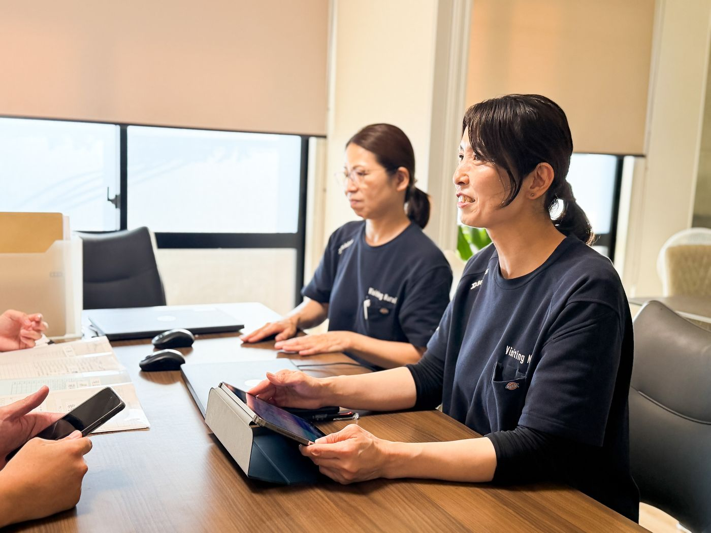
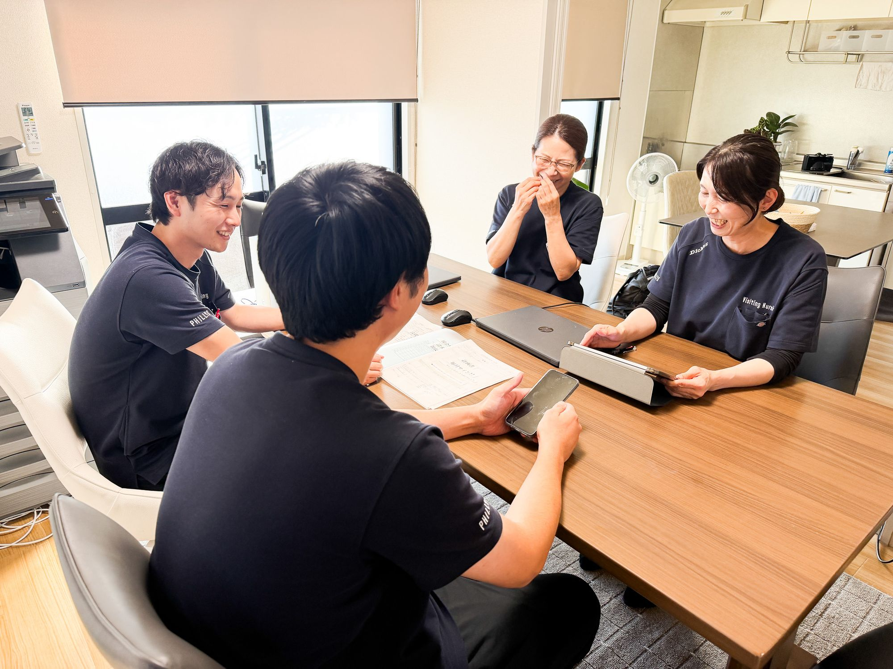
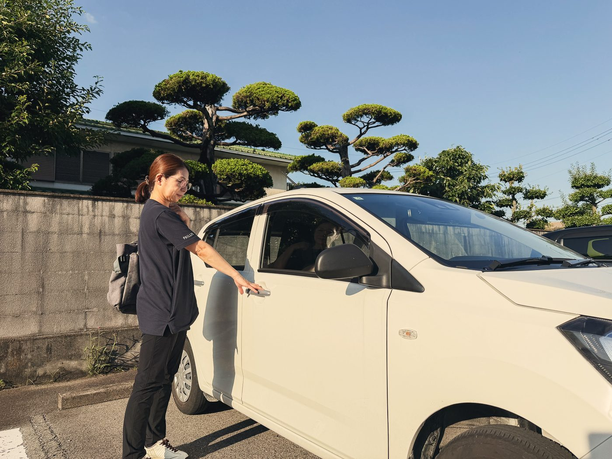

01
医療的なケア・健康管理
傷や褥瘡の処置、点滴や医療機器の管理から、日々の体調の観察、栄養・服薬の管理まで。主治医と連携しながら、ご自宅で必要な医療ケアを行います。
img/service2.jpg

倉敷市茶屋町の訪問看護ステーション
住み慣れたご自宅で、安心して過ごせるように。看護師とセラピストのチームが、訪問看護と訪問リハビリの両面から支えます。
サービス内容を見る
ご本人・ご家族・ケアマネジャー・医療機関の方、どなたからでもご相談ください。
About
社名の Phillys は、fill(担う・隙間を埋める)を行動指針とするスタッフ達、という意味の造語です。精神科訪問看護や難病(ALS等)、ターミナルケアなど、数多くの経験を積んだ看護師とセラピストが、ご自宅での暮らしを支えます。
詳しく見る
人を担う住み慣れた自宅での暮らしを、チームで支えます。

心の隙間を埋めるご本人やご家族の不安にも寄り添います。

手を差し伸べるどんな方でもお断りせず、必ず対応します。
Service
訪問看護は、病気や障がいがあっても住み慣れた自宅で生活し続けたい方のもとへ看護職などが伺い、医療ケアや身体ケアを行うサービスです。
01
傷や褥瘡の処置、点滴や医療機器の管理から、日々の体調の観察、栄養・服薬の管理まで。主治医と連携しながら、ご自宅で必要な医療ケアを行います。

02
理学療法士・作業療法士がご自宅に伺い、日常生活動作の訓練や歩行の練習を行います。保険外のリハビリにも対応しています。

03
食事・清潔・排せつのケアや、ご家族の悩みの相談、介護方法の助言を行います。住み慣れたご自宅で過ごすための終末期ケアも行います。

Voice
ご利用者様とそのご家族から、声を聞かせていただきました。見出しを押すと、全文をお読みいただけます。
家でリハビリをしたくて、紹介をしてもらいました。リハビリ士さんが、きてくれるようになってからほとんど寝ていた私が、一緒に外を歩けるようになりました。今は近くのスーパーに歩いていくことが目標です。
母が人工肛門になり、やる気を失っている時に、母が今一番やりたいことを聞いてくださったおかげで目標を持つことができ、そこからの回復がとても早かったです。
いつもお世話になっています。おかげで現在体調も良く過ごさせてもらっています。何かあった時にいつでも(24時間)連絡すると対応していただけると思うと、とても安心です。これからもよろしくお願いします。先日足湯をして爪を整えていただき、本人もとても気持ちよさそうで本当にありがとうございました。
Area
倉敷市茶屋町の事業所から、ご自宅へ伺います。
| 倉敷市 | 全域 |
|---|---|
| 総社市 | |
| 早島町 | |
| 岡山市 | 北区・南区 |
事業所〒710-1101 岡山県倉敷市茶屋町360-12 フロント茶屋町 B105
対応できる地域かどうか、お気軽にお問い合わせください。